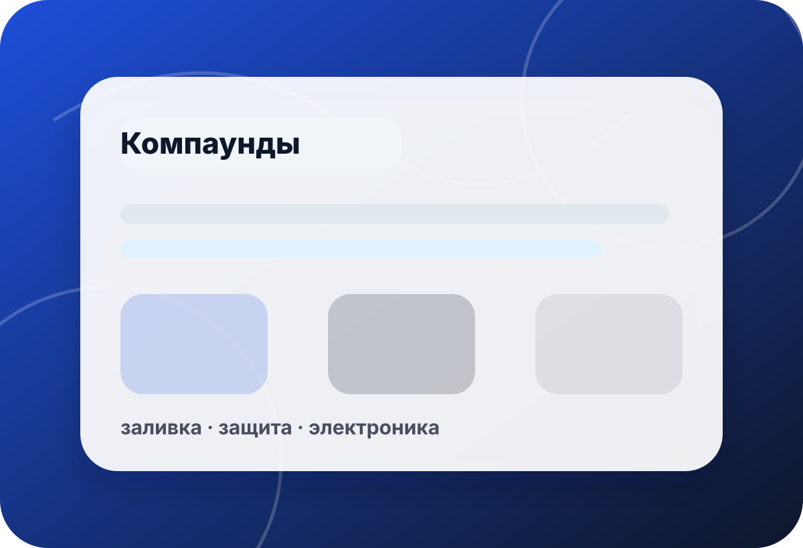

категория · компаунды
Компаунд под заливку, герметизацию и защиту изделия
Компаунд выбирают по назначению, вязкости, материалу основания, толщине слоя, условиям эксплуатации и требованиям к финишу. В preview не публикуем неподтверждённые цены, наличие и точные характеристики.
- задача
- заливка
- вязк.
- процесс
- слой
- толщина
- среда
- условия

быстрый выбор
Сначала определите функцию компаунда
Герметизация, защитная заливка, декоративная отливка и формовка требуют разных материалов и проверки совместимости.
Прозрачная или жёсткая заливкаЕсли важны оптика, покрытие или прочная поверхность — начните со смол.Смотреть смолы →Функциональная отливкаДля корпуса, детали или прототипа сравните компаунд с жидкими пластиками.Смотреть пластики →Чистая заливка без пузырейДля вязких материалов заранее продумайте тару, вакуум и режим работы.Подобрать вакуум →
связанные разделы
Куда перейти дальше
Категория компаундов пересекается со смолами, пластиками, силиконами и расходниками — точный выбор зависит от задачи.
 ✦
✦Эпоксидные смолы
Для прозрачных заливок, покрытий, декоративных и макетных задач.
- слой
- оптика
- пузырьки
 ▣
▣Жидкие пластики
Для прототипов, корпусов, функциональных деталей и малых серий.
- прочность
- скорость
- форма
◌Силиконы
Для форм, прокладок, эластичных задач и совместимых процессов.
- Shore
- основа
- тираж
✚Добавки к смолам
Пигменты и модификаторы подбираются по инструкции и тестовой пробе.
- цвет
- эффект
- совместимость
 ◎
◎Герметики и разделители
Подготовка поверхности снижает риск прилипания и дефектов.
- основание
- герметизация
- съём
 ⬢
⬢Адгезивы
Если задача ближе к склейке или фиксации, начните с клеевых материалов.
- пара материалов
- нагрузка
- поверхность
чек-лист
Что уточнить перед выбором
Назначение заливки
Защита, декор, форма, изоляция и прочная деталь требуют разных свойств.
Уточнить:задача · слой · поверхность · финишМатериал основания
Пластик, металл, дерево, силикон или гипс требуют проверки адгезии и подготовки.
Уточнить:основание · пористость · праймер · разделительПроцесс заливки
Вязкость, пузырьки, объём и время жизни влияют на качество результата.
Уточнить:объём · тара · вакуум · температураУсловия эксплуатации
Нагрузка, влажность, температура и контакт с химией меняют требования к материалу.
Уточнить:нагрузка · среда · износ · обслуживаниемини-бриф
Опишите заливку — поможем выбрать направление
Форма в preview не отправляет данные на сервер. Для реального запуска подключается CRM/почта/мессенджер после согласования.